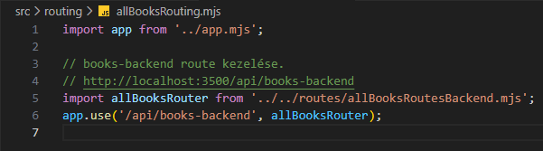
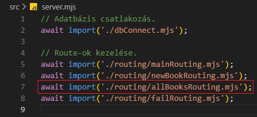
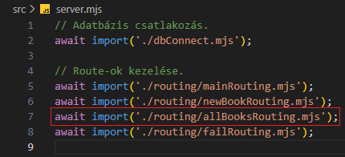

Összes könyv kezelése - allBooksRouting.mjs
Összes könyv kezelése - allBooksRouting.mjs

Ebben a részben szerkesztjük az src/routing mappában a allBooksRouting.mjs állományt, amelyben összekötjük a /api/books-backend route-ot a logikával.
-
Szerkesszük a
deleteOneBookControllersBackend.mjsállományunkat.-
import app from '../app.mjs';- azappobjektum alapértelmezett beimportálása. -
import allBooksRouter from '../../routes/allBooksRoutesBackend.mjs';- aallBooksRouterfüggvény alapértelmezett beimportálása. -
app.use('/api/books-backend', allBooksRouter);- ausemiddlewaresegítségével a/api/books-backendroute-hoz csatoljuk aallBooksRouterfüggvényt.
Azaz bármikor is küldünk egyhttp://localhost:PORT/api/books-backendlekérést a webszervernek, akkor az ehhez tartozó logikával tér vissza.
-
-
Szerkesszük újra a
server.mjsállományt. és 
-
await import('./routing/allBooksRouting.mjs');- importáljuk be aallBooksRouting.mjs-ben létrehozottpromise-t.
-